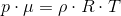

Subiectul I
Răspuns:
- volumul gazului scade


Cum  , rezultă că
, rezultă că  , de unde obținem că volumul gazului scade.
, de unde obținem că volumul gazului scade.
- Simbolurile mărimilor fizice fiind cele utilizate în manuale de fizică, relaţia dintre căldura molară
 și căldura specifică
și căldura specifică  a unui gaz în timpul unui proces termodinamic este:
a unui gaz în timpul unui proces termodinamic este:
a.  b.
b.  c.
c.  d.
d. 
Răspuns:


 .
.
- Simbolurile mărimilor fizice fiind cele utilizate în manuale de fizică, unitatea de măsură în S.I. a mărimii fizice exprimate prin raportul
 este:
este:
a. b.  c.
c.  d.
d. 
Răspuns:




![\begin{align*} [\rho]_{ _{SI}}&=\frac{[m]_{ _{SI}}}{[V]_{ _{SI}}} \\\\& =\frac{\text{kg}}{\text{m}^3} \\\\&=\text{kg}\cdot (\text{m}^3)^{-1} \\\\&=\text{kg}\cdot \text{m}^{-3} \end{align*}](https://liceunet.ro/media/webbooks/678/5527/images/equations/4sq8caccz7rsyhayrnxrlg==.gif)
![\begin{align*} \Rightarrow \left [\frac{p\cdot \mu}{R\cdot T} \right ]_{ _{SI}}=[\rho]_{ _{SI}}=\text{kg}\cdot \text{m}^{-3}\end{align*}](https://liceunet.ro/media/webbooks/678/5527/images/equations/mh8ydyhcscuxqluonhbtug==.gif) .
.
- Un mol de gaz ideal monoatomic trece, printr-o transformare adiabatică, din starea iniţială
 , în care temperatura este
, în care temperatura este 
 în starea finală
în starea finală  , în care temperatura este
, în care temperatura este . Lucrul mecanic schimbat de gaz cu exteriorul în cursul acestei transformări este:
. Lucrul mecanic schimbat de gaz cu exteriorul în cursul acestei transformări este:
a.  b.
b.  c.
c.  d.
d. 
Răspuns:


Cum avem gaz monoatomic, ne rezultă
 .
.
Atunci, succesiv, avem că:


 .
.
- O cantitate de gaz, considerat ideal, este supus procesului ciclic
 reprezentat în coordonate
reprezentat în coordonate  în figura alăturată.
în figura alăturată.

Lucrul mecanic total schimbat de gaz cu exteriorul în cursul procesului ciclic este:
a.  b.
b.  c.
c.  d.
d. 
Răspuns:
Într-o diagramă , lucrul mecanic este egal cu aria dintre graficul transformării şi axa volumului.
Când procesul este unul ciclic (graficul se închide), atunci lucrul mecanic este egal cu aria cuprinsă în interiorul graficului.
Lucrul mecanic este pozitiv atunci când sensul transformării este de la stânga la dreapta şi este negativ atunci când sensul transformării este de la dreapta la stânga.


Din grafic se observă că aria de sub transformarea  este mai mare decât aria de sub transformarea
este mai mare decât aria de sub transformarea  .
.


 .
.